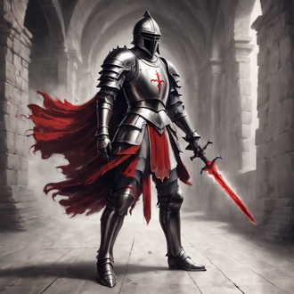
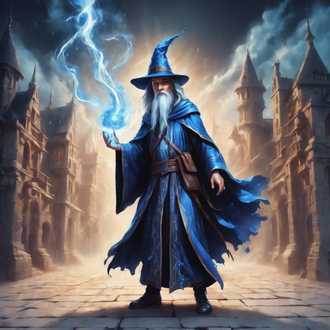
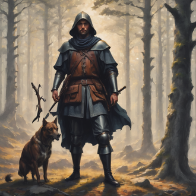
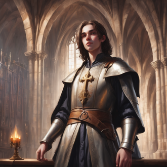
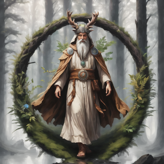
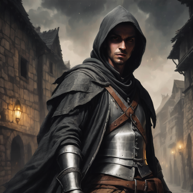
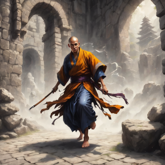
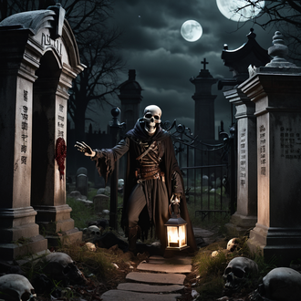
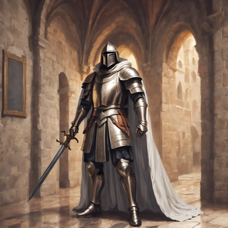

-
Cavaleiro
Atributos
Pontos de Vida: um cavaleiro começa com 20 pontos de vida e ganha 5 PV por nível.
Perícias Treinadas: 2 + modificador de Inteligência.
Perícias de Classe: Adestrar Animais, Atletismo, Cavalgar, Conhecimento, Diplomacia, Iniciativa, Intimidação, Percepção.
Talentos Adicionais: Usar Armaduras (leves, médias e pesadas), Usar Armas (simples e marciais), Usar Escudos, Fortitude Maior. -
Mago
Atributos
Pontos de Vida: um mago começa com 8 pontos de vida e ganha 2 PV por nível seguinte.
Perícias Treinadas: 2 + modificador de Inteligência.
Perícias de Classe: Conhecimento, Identificar Magia, Ofício, Percepção.
Talentos Adicionais: Usar Armas Simples, Vontade de Ferro. -
Caçador
Atributos
Pontos de Vida: um caçador começa com 16 pontos de vida e ganha 4 PVs por nível seguinte.
Perícias Treinadas: 5+ modificador de Inteligência. (D20: Luta ou Pontaria, Furtividade e mais 6 perícias).
Perícias de Classe: Acrobacia, Atletismo, Atuação, Cavalgar, Conhecimento, Cura, Diplomacia, Enganação, Furtividade, Iniciativa, Intimidação, Intuição, Jogatina, Ladinagem, Obter Informações, Ofício, Percepção.
Talentos Adicionais: Usar Armaduras (Leves e Médias), Usar Armas Simples e Marciais, Reflexos Rápidos, Fortitude Maior e Vontade de Ferro. -
Clérigo
Atributos
Pontos de Vida: um clérigo começa com 16 pontos de vida e ganha 4 PVs por nível seguinte.
Perícias Treinadas: 2 + modificador de Inteligência.
Perícias de Classe: Conhecimento, Cura, Diplomacia, Identificar Magia, Intuição, Meditação, Ofício.
Talentos Adicionais: Usar Armaduras (leves, médias e pesadas),Usar Armas Simples, Usar Escudos, Fortitude Maior, Vontade de Ferro. -
Druída
Atributos
Pontos de Vida: um druida começa com 16 pontos de vida e ganha 4 PV por nível seguinte.
Perícias Treinadas: 4 + modificador de Inteligência.
Perícias de Classe: Adestrar Animais, Atletismo, Cavalgar, Cura, Conhecimento, Diplomacia, Identificar Magia, Ofício, Percepção Sobrevivência.
Talentos Adicionais: Usar Armaduras (leves e médias), Usar Armas Simples, Usar Escudos, Fortitude Maior, Vontade de Ferro, Senso da Natureza. -
Ladino
Atributos
Pontos de Vida: um ladino começa com 12 pontos de vida e ganha 3 PV por nível seguinte.
Perícias Treinadas: 8 + modificador de Inteligência.
Perícias de Classe: Acrobacia, Atletismo, Atuação, Cavalgar, Conhecimento, Diplomacia, Enganação, Furtividade, Iniciativa, Intimidação, Intuição, Jogatina, Ladinagem, Obter Informações, Ofício, Percepção.
Talentos Adicionais: Usar Armaduras Leves, Usar Armas (simples e marciais), Usar Escudos, Reflexos Rápidos. -
Monge
Atributos
Pontos de Vida: um monge começa com 16 pontos de vida e ganha 4 PVs por nível seguinte.
Perícias Treinadas: 4 + modificador de Inteligência.
Perícias de Classe: Acrobacia, Atletismo, Conhecimento, Cura, Diplomacia, Furtividade, Iniciativa, Intuição, Meditação, Ofício, Percepção.
Talentos Adicionais: Ataque Desarmado Aprimorado, Fortitude Maior, Reflexos Rápidos, Usar Arma Exótica (nunchaku, sai, shuriken), Usar Armas Simples e Vontade de Ferro. -
Necromancer
Atributos
Pontos de Vida: um necromante começa com 8 pontos de vida e ganha 2 PVs por nível seguinte.
Perícias Treinadas: 2 + modificador de Inteligência
Perícias de Classe: Conhecimento, Identificar Magia, Ofício e Percepção.
Talentos Adicionais: Usar Armas (simples), Vontade de Ferro.
Pontos de Magia: um necromante tem um número de pontos de magia (PM) igual a 1 + modificador de Inteligência. Cada vez que avança de nível, recebe 3 PM.
Magias por Nível: 1 de necromancia + 1 de qualquer escola, exceto encantamento.
Item de Poder: Lamparina negra. O necromante pode possuir um item de poder normal, mas também tem a opção de substitui-lo por uma lamparina negra.
Familiar: Um necromante pode escolher um familiar da lista normal do Mago. Contudo, caso use um de seus Mistérios Arcanos, pode ter um lacaio funesto ou montaria esquelética no lugar de um familiar comum. -
Paladino
Atributos
Pontos de Vida: um paladino começa com 20 pontos de vida e ganha 5 PV por nível seguinte.
Perícias Treinadas: 2 + modificador de Inteligência.
Perícias de Classe: Adestrar Animais, Atletismo, Cavalgar, Conhecimento, Cura, Diplomacia, Iniciativa, Intuição, Ofício.
Talentos Adicionais: Usar Armaduras (leves, médias e pesadas), Usar Armas (simples e marciais), Usar Escudos, Fortitude Maior.